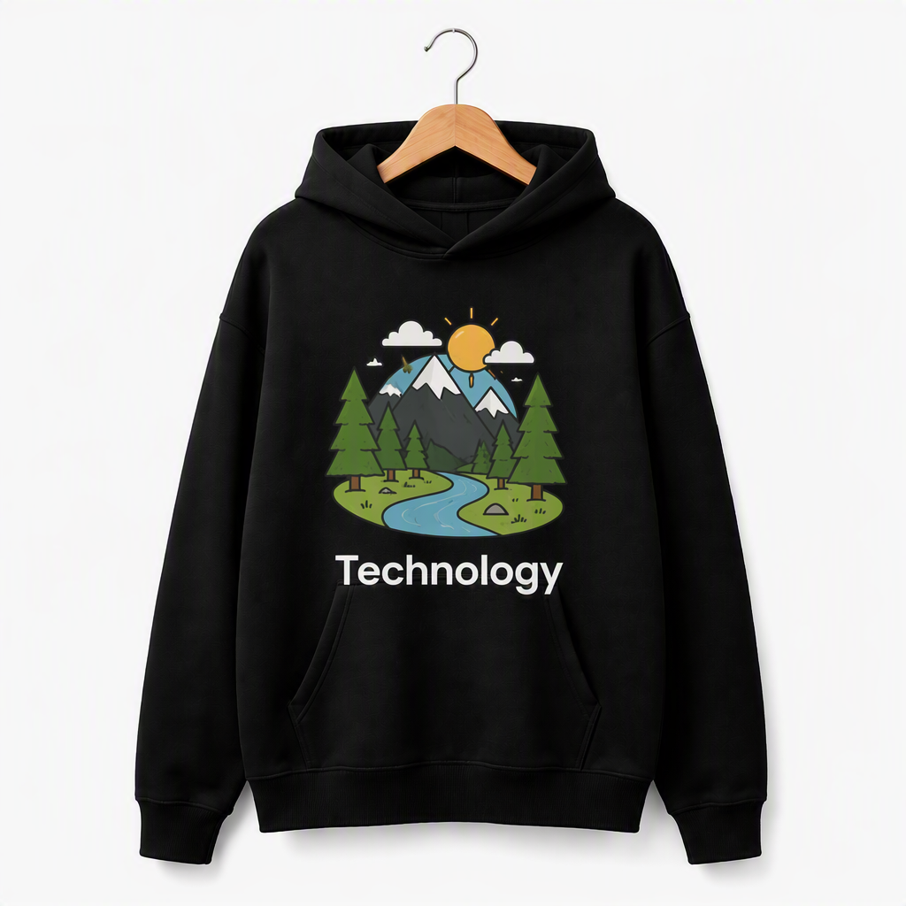
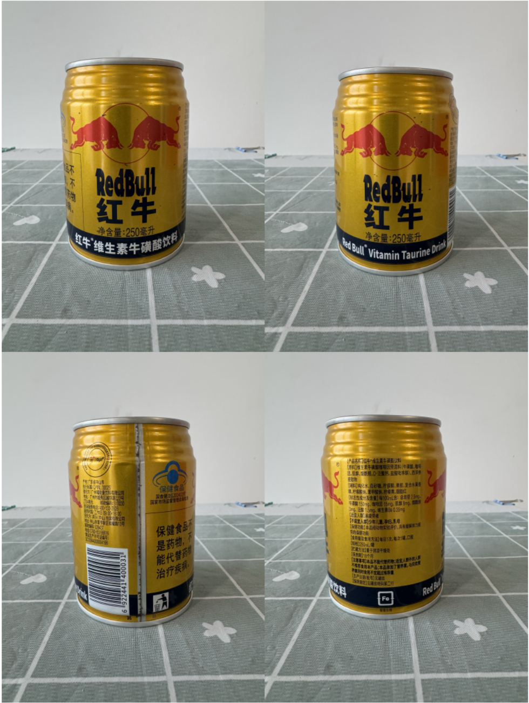

Native 3D Material Fidelity NOW has been Improved！
Existing native 3D textures fail to reconstruct text and patterns from input images in regions lacking geometric guidance—TaoTex solves this problem.

TRELLIS.2
TaoTex
Drag to rotate · Right-drag to pan
SOTA performance
Pay close attention to the texture-to-image alignment across different viewpoints.

Tripo v3.1
TaoTex
Drag to rotate · Right-drag to pan
More Comparisons


Citation
@misc{wu2026taotex,
title={TaoTex: Boosting Texture Detail Fidelity for Native 3D Material Generation},
author={Xiuchao Wu and Shuichang Lai and Jiangjing Lyu and Chengfei Lyu},
year={2026},
eprint={2609.34934},
archivePrefix={arXiv},
primaryClass={cs.CV},
url={https://arxiv.org/abs/2609.34934},
}